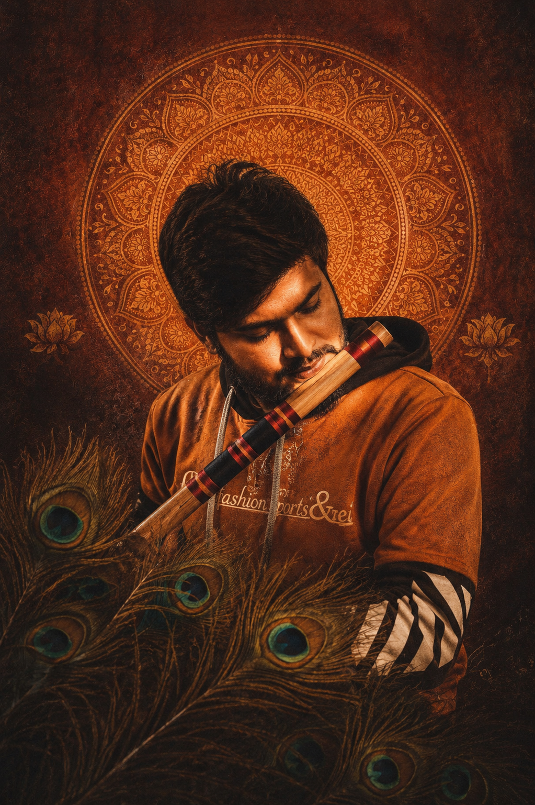

Romantic cover projects with expressive melodic layering.
Ideal for Bollywood flute covers and duet-driven visual releases built for social sharing.
Indian Flute Artist | Bansuri Performer | Music Creator
Breathing melodies through bamboo.
A premium digital stage for an Indian flute artist blending Bollywood emotion, fusion textures, cinematic presentation, and soulful instrumental storytelling across reels, videos, and live moments.
Tanmoy Flute presents bansuri-driven musical expression across emotional covers, fusion performance visuals, and cinematic social content designed for today's digital audiences.
Instagram Reel Showcase
YouTube Performance Stage

About The Artist
Tanmoy Flute is an Indian bansuri performer and instrumental music creator whose work moves between classical sensitivity, Bollywood-inspired melody, fusion experimentation, and cinematic digital presentation.
His musical identity is built around emotional phrasing, lyrical airflow, and the ability to turn familiar songs into visual and sonic storytelling moments for reels, videos, and live audiences.
Rooted in Indian melodic tradition and expanded through performance content, covers, collaborations, and evolving digital artistry.
Indian classical influence, cinematic soundscapes, romantic Bollywood themes, devotional textures, and expressive fusion arrangement.
Instrumental storytelling, emotional melody shaping, live stage passion, and a polished visual identity across social platforms.
Moments Through Music
Collaboration Showcase
Ideal for Bollywood flute covers and duet-driven visual releases built for social sharing.
Designed for contemporary instrumental storytelling with elegant visual identity.
Built around emotional phrasing, clean sound, and cinematic presentation.
Perfect for creators, event brands, and musicians seeking premium flute-driven content.
Music Categories
Soft melodic lines, lyrical breath control, and a cinematic emotional arc.
Immersive instrumental storytelling shaped for reflection, reels, and quiet atmosphere.
Beloved songs translated into warm bansuri expression with modern presentation.
Spiritual tone, calming phrasing, and reverent melodic depth.
Tradition and contemporary arrangement meeting in polished collaborative textures.
Ambient flute textures for background listening, mood content, and relaxed visual edits.
Instagram Followers
YouTube Subscribers
Total Videos
Collaborations
Music Uploads
Testimonials
Contact / Booking
This version stays lightweight and fast with a simple mail-based contact flow, while keeping all major social platforms one click away.